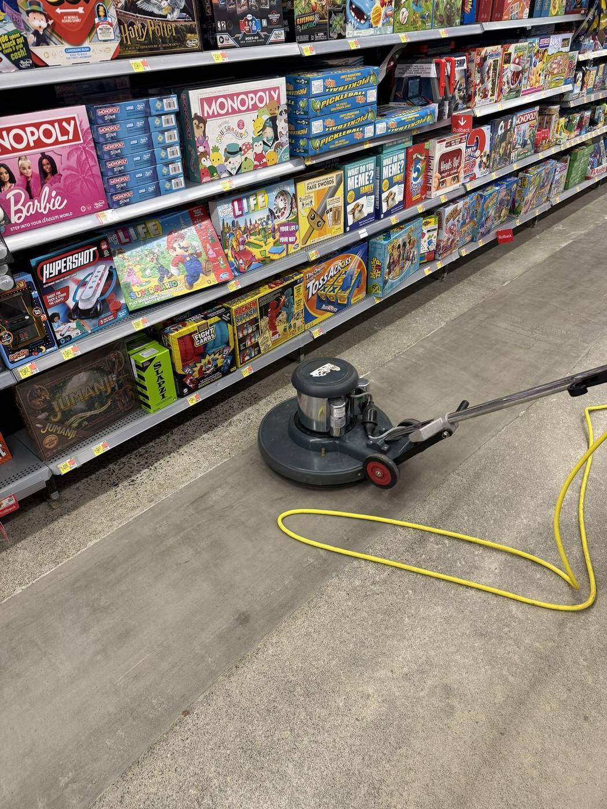

Commercial cleaning · Albany, NY & the Capital Region
Commercial cleaning in Albany, NY — one crew, one contract.
Offices, medical suites, retail, warehouses, schools and apartment common areas. A written scope, our crews, and a COI in your inbox before day one.

Everything your facility needs, on your schedule
We build the scope around your building — frequency, rooms, surfaces and supplies — and put it in writing. No generic packages.
Every building type is a different cleaning problem
A Class-A office lobby, a dental operatory and a warehouse dock floor need three different scopes. We write yours around how the space is actually used.
Offices and corporate suites. Desks, conference rooms, breakrooms and restrooms, finished after hours so the space is ready at open. Details on our office cleaning page.
Medical and dental practices. Exam rooms, waiting areas and high-touch points on a strict, repeatable routine. See medical office cleaning.
Retail storefronts. Clean glass, clean floors and stocked restrooms — often with day-porter coverage while customers are in the building.
Warehouses and industrial sites. Dust control, swept and machine-scrubbed floors, clear walkways, and offices and locker rooms on the same program. We clean for logistics and industrial clients including FedEx, UPS and CSX.
Apartment and condo common areas. Lobbies, hallways, elevators, fitness rooms, laundry and trash rooms. See HOA & condo cleaning.
Schools and campuses. We serve SUNY, the Albany City School District and East Greenbush CSD. Browse every sector on our industries page.
What a TPS Pro cleaning contract spells out
A contract should say exactly what gets done, how often, and who answers for it. Ours does.
Recurring tasks by frequency. Each room type gets a task list with a frequency: trash and restrooms nightly, detailed dusting weekly, vents and baseboards monthly. You see the whole calendar before we start, not after a complaint.
Periodic floor work. Hard floors and carpet run on a longer cycle — burnishing, scrub-and-recoat, annual strip-and-wax and carpet extraction. Our floor care crew is in-house, so it goes on the same invoice.
Supplies. We can bring all chemicals and equipment and keep paper, soap and liners stocked, so nobody on your team is chasing supplies.
Quality checks. Work is checked against the written scope. When something is missed, you call one number and a person who can fix it answers.
Access and security. Keys, fobs and alarm codes are logged and issued only to the crew assigned to your building. We follow your lock-up and alarm procedures to the letter.
Paperwork. Certificate of insurance (with your additional-insured wording) and W-9 before day one. Procurement teams can pull everything from our vendor packet.
From walkthrough to first clean
Walkthrough
We walk the building with you — room types, traffic, problem areas, access and the hours you need us in or out. No charge.
Written scope & price
You get a task-by-frequency scope and a real number, plus W-9 and COI, usually within 24 hours of the walkthrough.
Start-up clean
The first visits bring the building up to standard — floors, restrooms and dust that built up under the last vendor — so maintenance cleaning can hold it there.
Steady program
The same crew returns on your schedule, with quality checks against the scope and one contact you can call 24/7.
From our own job sites



Why Albany facility managers consolidate with us
Managing a building means managing vendors: a cleaning company, a floor crew, a handyman, a painter, a post-construction cleaner, and whoever answers at 2 a.m. Every one of them is another contract, another certificate of insurance to chase, and another party ready to blame the last one.
TPS Pro replaces that pile with one relationship. We handle janitorial and office cleaning, floor care, post-construction cleaning, student and rental turnovers, and property maintenance — one company, one contract. When our crew spots a leaking faucet, a failed ceiling tile or a scuffed wall during a clean, we fix it instead of handing you another number.
We are locally owned and have worked in Albany since 2010, for clients from Golub Corporation and Cushman & Wakefield to FirstLight Fiber and Curaleaf. When you call, you reach the people who run the crews, not a regional call center.
Rated 4.6 by Capital Region clients
Thirty Google reviews from property managers, owners and businesses we work for. Read them unedited on our Google profile.
Read our Google reviews
Build the program you need
Commercial cleaning across the Capital Region — see what we do in each city:
Choosing a vendor? Our guides cover how to choose a commercial cleaning company in Albany and how often an office should be cleaned.
Commercial cleaning questions, answered
How much does commercial cleaning cost in Albany, NY?
It depends on your square footage, the scope of work, and how often you need service. Most commercial cleaning in the Albany area is priced per visit or as a monthly recurring contract. TPS Pro walks your facility for free and sends a written scope and a real number — not a generic rate. For the factors that move the number, read our guide to commercial cleaning cost in Albany.
Do you clean during or after business hours?
Both. We schedule around your operations — daytime day-porter service, evening cleans after your team leaves, or overnight service for facilities that can't have crews on the floor during the day.
Are you fully insured?
Yes. TPS Pro is fully insured, and we send a certificate of insurance and a W-9 before any work begins, so your paperwork is in order before our crew walks in.
Can you handle both cleaning and building repairs?
Yes, and it's the main reason clients consolidate with us. Beyond cleaning, TPS Pro handles property maintenance — plumbing fixes, drywall, painting, floor care and general repairs. One contract, one accountable team.
What areas do you serve?
We serve Albany and the entire Capital Region, including Troy, Schenectady, Saratoga Springs, Clifton Park, Cohoes, Colonie, Ballston Spa and Glens Falls.
What's the difference between commercial cleaning and janitorial services?
Commercial cleaning is the umbrella: recurring janitorial, periodic deep cleans, floor refinishing, post-construction and specialty work. Janitorial is the recurring piece — the nightly or daily program. Most of our Albany accounts combine the two in one contract; see our janitorial services page for how recurring programs are built.
Get a commercial cleaning quote
Tell us about the building. We'll walk it, write the scope, and send a real number — usually within 24 hours. No obligation.
- Fully insured — W-9 and COI before day one
- Trained, supervised crews and one point of contact
- Procurement team? Get our vendor packet